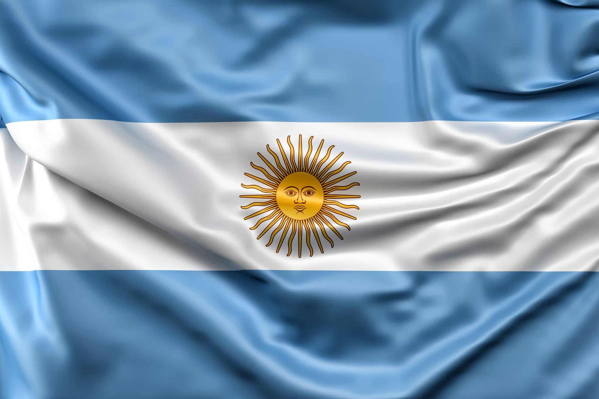

Argentina, oficialmente República Argentina, é o segundo maior país da América do Sul em território e o terceiro em termos de população, constituída como uma federação de 23 províncias e uma cidade autônoma, Buenos Aires, capital do país. É o oitavo maior país do mundo em área territorial e o maior entre as nações de língua espanhola, embora México, Colômbia e Espanha, que possuem menor território, sejam mais populosos.
A área continental da Argentina está entre a cordilheira dos Andes a oeste e o oceano Atlântico, a leste. Faz fronteira com o Paraguai e Bolívia ao norte, com o Brasil e Uruguai a nordeste e com o Chile a oeste e sul.
Sem dúvida, o esporte mais popular na Argentina é o futebol. Outros esportes importantes são basquete, tênis, pádel, hóquei em campo, vôlei, boxe, rúgbi, automobilismo, golf e polo.
É banhada pelos oceanos Pacífico, a oeste, e Atlântico, a leste.
Possui 12 países e um território ultramarino, a Guiana Francesa.
Divide-se em América Platina, América Andina, Guianas e Brasil. Outras divisões são possíveis.
O relevo é subdividido em uma região montanhosa, a da Cordilheira dos Andes, planaltos no seu interior e planícies.
Os climas são predominantemente tropicais, com a existência de climas temperados ao sul e também áridos e semiáridos.
Apresenta uma grande biodiversidade. Sua vegetação vai desde as florestas tropicais até estepes e desertos.
No subcontinente vivem 434.260.000 habitantes, de acordo com a ONU. O Brasil é o seu país mais populoso, e o Suriname, o menos populoso.
O setor terciário concentra a maior parte da mão de obra. A extração mineral e a agropecuária, por sua vez, têm grande importância na economia da região, notadamente nas exportações.